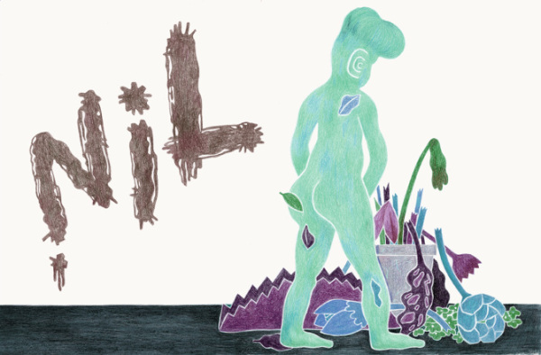

nil是什么？
if nil == err { // todo }
相信上面的代码片段一定不陌生，在我们的开发中它几乎无处不在。当出现不等于nil的时候，说明出现错误了，需要我们对这个错误进行处理；如果等于nil说明运行正常。那什么是nil呢？nil的字面意是无，或者是零值。在Golang中，如果你声明了一个变量但是没有对它进行赋值操作，那么这个变量就会有一个类型的默认零值。例如：
bool -> false numbers -> 0 string -> "" 指针 -> nil slices -> nil（slice变量中有3个成员值：buf为nil，len和cap都是0） maps -> nil channels -> nil functions -> nil interfaces -> nil（interface包含”type, value”，一个nil interface必须二者都为nil:”nil, nil”）
这个ob中每一个字段都有自己的默认零值，并且ob不等于nil，那么nil是什么？
在源码中你可以找到：
// nil is a predeclared identifier representing the zero value for a // pointer, channel, func, interface, map, or slice type. var nil Type // Type must be a pointer, channel, func, interface, // map,or slice type
甚至我们直接这样定义
type NilType struct { } var nil NilType
都不会报错。是的，很惊讶。
nil在Golang中有什么用？
我们知道它并不是Golang的关键字，但nil是一个神奇的存在，也有很多的用处。nil并不是一个type，所以我们当使用开头的代码段时一定要小心：
不要重定义错误具体类型（或者说未赋值的结构体），例子from，Francesc Campoy在GoConf上做的Understanding Nil。
// Do not declare concrete error vars func do() error { var err *doError // nil of type *doError return err // error (*doError, nil) } func main() { err := do() // error (*doError, nil) fmt.Println(err == nil) // false } // Do not return concrete error types： func do() *doError { return nil // nil of type *doError } func main() { err := do() // nil of type *doError fmt.Println(err == nil) // true } func do() *doError { return nil // nil of type *doError } func wrapDo() error { // error (*doError, nil) return do() // nil of type *doError } func main() { err := wrapDo() // error (*doError, nil) fmt.Println(err == nil) // false } 重新声明错误类型或者返回新的错误类型，再使用 err == nil 就是一个陷阱。 或者我们再看下面代码 package main import ( "fmt" ) type Fruit interface { Name() } type Apple struct{} func (stu *Apple) Name() { } func check() Fruit { var apple *Apple return apple } func main() { if check() == nil { fmt.Println("check() == nil") } else { fmt.Println("check() != nil") } }
判断下，check()的返回值是什么？
。。。
。。。
。。。
输出：check() != nil
此时返回值并不是nil而是interface{}。
对于interface来说，需要type, value这个元组中两个值都为nil，interface值才是nil。
使用场景：